Drools 5.0 M1 – New and Noteworthy
Drools 5.0 will split up into 4 main sub projects, the documentation has already been split to reflect this:
- Drools Guvnor (BRMS/BPMS)
- Drools Expert (rule engine),
- Drools Flow (process/workflow)
- Drools Fusion (cep/temporal reasoning)
M1 is still very hairy and only for the hard core drools users, little documentation has been updated – although some Flow and Guvnor stuff has been. So you will have to rely on looking at code and unit tests, as well as asking on the mailing lists and irc – we hope this new and noteworthy document helps guide you too.
M2 will involve an API change as we refactor away from being rules centric, as discussed here, we will provide a legacy 4.0 wrapper jar for backwards compatability in some later milestones.
We hope that M3/M4 will start to be more user/public friendly as the feature set matures and bugs come in and we start to update the documentation. We are hoping for an August/Sept release.
5.0 M1 can be found on the main drools download page. The Binary with dependencies is particularly large, but the bulk of it is uml javadocs, we will try and address this in M2 or M3 where we will try and remove non public stable apis.
A Big Thanks to the following Contributors
Ming Jin – Package serialisation performance increase (10x improvement)
Steven Williams – various decision table tasks.
Guvnor (the BRMS component)
New look web tooling
Web based decision table editor
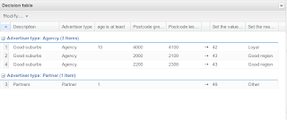
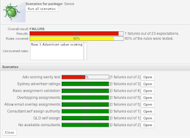 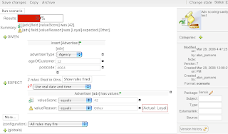
WebDAV file based interface to repository
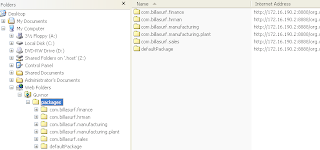
Declarative modelling of types (types that are not in pojos)
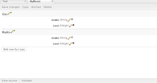
This works with the new “declare” statement – you can now declare types in drl itself. You can then populate these without using a pojo (if you like). These types are then available in the rulebase.
Others:
- Logic verifier
- Improvements to guided editor (many)
CORE ENGINE
Asymmetrical Rete algorithm implementation
Shadow proxies are no longer needed. Shadow proxies protected the engine from information change on facts, which if occurred outside of the engine’s control it could not be modified or retracted.
PackageBuilder can now build multiple namespaces
You no longer need to confine one PackageBuilder to one package namespace. Just keeping adding your DRLs for any namespace and getPackages() returns an array of Packages for each of the used namespaces.
Package[] packages = pkgBuilder.getPackages();
RuleBase attachment to PackageBuilder
It is now possible to attach a RuleBase to a PackageBuilder, this means that rules are built and added to the rulebase at the same time. PackageBuilder uses the Package instances of the actual RuleBase as it’s source, removing the need for additional Package creation and merging that happens in the existing approach.
RuleBase ruleBase = RuleBaseFactory.newRuleBase();
PackageBuilder pkgBuilder = new PackageBuilder( ruleBase, null );
Binary marshalling of stateful sessions
Stateful sessions can now saved and resumed at a later date.
Pre-loaded data sessions can now be created.
Pluggable strategies can be used for user object persistence, i.e. hibernate or identity maps.
Type Declaration
Drools now supports a new base construct called Type Declaration. This construct fulfils two purposes: the ability to declare fact metadata, and the ability to dynamically generate new fact types local to the rule engine. The Guvnor modelling tool uses this underneath.
One example of the construct is:
declare StockTick
@role( event )
@timestamp( timestampAttr )
companySymbol : String
stockPrice : double
timestampAttr : long
end
Declaring Fact Metadata
To declare and associate fact metadata, just use the @ symbol for each metadata ID you want to declare. Example:
declare StockTick
@role( event )
end
Triggering Bean Generation
To activate the dynamic bean generation, just add fields and types to your type declaration:
declare Person
name : String
age : int
end
DSL improvements
A series of DSL improvements were implemented, including a completely new parser and the ability to declare matching masks for matching variables. For instance, one can constrain a phone number field to a 2-digit country code + 3-digit area code + 8-digit phone number, all connected by a “-” (dash), by declaring the DSL map like:
The phone number is {number:d{2}-d{3}-d{8}}
Any valid java regexp may be used in the variable mask.
Complex Event Processing Support (Temporal Reasoning)
Drools 5.0 brings to the rules world the full power of events processing by supporting a number of CEP features as well as supporting events as first class citizens in the rules engine.
Event Semantics
Events are (from a rules engine perspective) a special type of fact that has a few special characteristics:
- they are immutable
- they have strong time-related relationships
- they may have clear lifecycle windows
- they may be transparently garbage collected after it’s lifecycle window expires
- they may be time-constrained
- they may be included in sliding windows for reasoning
Event Declaration
Any fact type can assume an event role, and its corresponding event semantics, by simply declaring the metadata for it. Both existing and generated beans support event semantics:
# existing bean assuming an event role
import org.drools.test.StockTick
declare StockTick
@role( event )
end
# generated bean assuming an event role
declare Alarm
@role( event )
type : String
timestamp : long
end
Entry-Point Stream Listeners
A new key “from entry-point” has been added to allow a pattern in a rule to listen on a stream, which avoids the overhead of having to insert the object into the working memory where it is potentially reasoned over by all rules.
$st : StockTick( company == "ACME", price > 10 ) from entry-point "stock stream"
To insert facts into an entry point:
WorkingMemoryEntryPoint entry = wm.getWorkingMemoryEntryPoint( "stock stream" );
entry.insert( ticker );
StreamTest shows a unit for this.
Event Correlation and New Operators
Event correlation and time based constraint support are requirements of event processing, and are completely supported by Drools 5.0. The new, out of the box, time constraint operators can be seen in these test case rules:
test_CEP_TimeRelationalOperators.drl
As seen in the test above, Drools supports both: primitive events, that are point in time occurrences with no duration, and compound events, that are events with distinct start and end timestamps.
The complete list of operators are:
- coincides
- before
- after
- meets
- metby
- overlaps
- overlappedby
- during
- includes
- starts
- startedby
- finishes
- finishedby
Sliding Time Windows
Drools 5.0 adds support for reasoning over sliding windows of events. For instance:
StockTick( symbol == "RHAT" ) over window:time( 60 )
The above example will only pattern match the RHAT stock ticks that happened in the last 60 clock ticks, discarding any event older than that.
Session Clock
Enabling full event processing capabilities requires the ability to configure and interact with a session clock. Drools adds support for time reasoning and session clock configuration, allowing it to not only run real time event processing but also simulations, what-if scenarios and post-processing audit by replaying a scenario.
The Clock is specified as part of the SessionConfiguration, a new class that is optionally specified at session creation time:
SessionConfiguration conf = new SessionConfiguration();
conf.setClockType( ClockType.PSEUDO_CLOCK );
StatefulSession session = ruleBase.newStatefulSession( conf );
Drools Flow
Drools 4.0 had simple “RuleFlow” which was for orchestrating rules. Drools 5.0 introduces a powerful (extensible) workflow engine. It allows users to specify their business logic using both rules and processes (where powerful interaction between processes and rules is possible) and offers a unified enviroment.
Interactive Debugger
Process Instance view at a specific breakpoint:
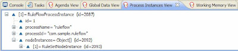 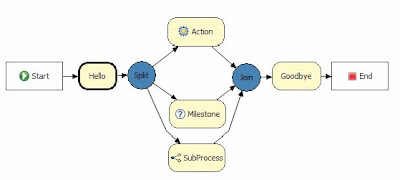
Timers:
A timer node can be added which causes the execution of the node to wait for a specific period. Currently just uses JDK defaults of initial delay and repeat delay, more complex timers will be available in further milestones.
Human Task:
Processes can include tasks that need to be executed by human actors. Human tasks include parameters like taskname, priority, description, actorId, etc. The process engine can easily be integrated with existing human task component (like for example a WS-HumanTask implementation) using our pluggable work items (see below). Swimlanes and assignment rules are also supported.
The palette in the screenshot shows the two new components, and the workflow itself shows the human task in use. It also shows two “work items” which is explained in the next section: 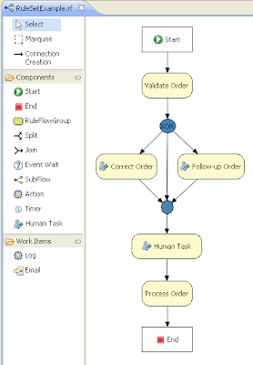
Domain Specific Work Items
Domain Specific Work Items are pluggable nodes that users create to facilitate custom task execution. They provide an api to specify a new icon in the palette and gui editor for the tasks properties, if no editor gui is supplied then it defaults to a text based key value pair form. The api then allows execution behaviour for these work items to be specified. By default the Email and Log work items are provided. The Drools flow Manual has been updated on how to implement these.
The below image shows three different work items in use in a workflow, “Blood Pressure”, “BP Medication”, “Notify GP”: 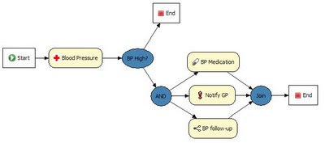 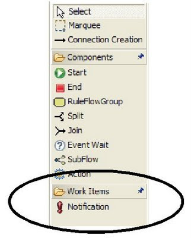
extensible Process Definition Language (ePDL)
Drools 4.0 used Xstream to store it’s content, which was not easily human writeable. Drools 5.0 introduced the ePDL which is a XML specific to our process language, it also allows for domain specific extensions which has been talked about in detail in this blog posting “Drools Extensible Process Definition Language (ePDL) and the Semantic Module Framework (SMF)”. An example of the XML language, with a DSL extension in red, is shown below.
<process name="process name" id="process name" package-name="org.domain"
xmlns="http://drools.org/drools-4.0/process"
xmlns:mydsl="http://domain/org/mydsl"
xmlns:xs="http://www.w3.org/2001/XMLSchema-instance"
xs:schemaLocation="http://drools.org/drools-4.0/process drools-processes-4.0.xsd" >
<nodes>
<start id="0" />
<action id="1" dialect="java">
list.add( "action node was here" );
</action>
<mydsl:logger id="2" type="warn">
This is my message
<mydsl:logger>
<end id="3" />
</nodes>
<connections>
<connection from="0 to="1" />
<connection from="1" to="2" />
<connection from="2" to="3" />
</connections>
</process>
Pluggable Nodes
The underlying nodes for the framework are completely pluggable making it simple to extend and to implement other execution models. We already have a partial implementation for OSWorkflow and are working with Deigo to complete this to provide a migration path for OSWorkflow users.
Other enhancements include exception scopes, the ability to include on-entry and on-exit actions on various node types, integration with our binary persistence mechanism to persist the state of long running processes, etc. Check out the Drools Flow documentation to learn more.
Drools Clips
A very alpha quality version of Drools Clips is now working and supports:
- deftemplate
- defrule
- deffuction
- and/or/not/exists/test Conditional Elements
- Literal, Variable, Return Value and Predicate field constraints
You can look at the ClipsShellTest and LhsClipsParserTest get an idea of the full support. It’s still early stages and it’s very rough in places, especially on error handling and feedback as well as no view commands to display data. The Shell in action:
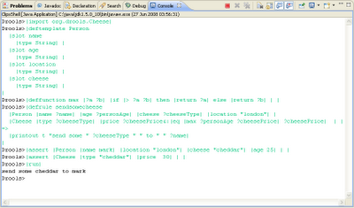
The screen shot is a contrived example but it does show a shell environment cleanly mixing deftemplates and pojos – note that Drools 5.0 does not require shadow facts, due to the new asymmetrical Rete algorithm. It also shows deffunction in use.

{kind=link}
{kind=link}
{kind=link}
{kind=link}
{kind=link}
{kind=link}
{kind=link}
{kind=link}
{kind=link}
{kind=link}
{kind=link}
{kind=link}